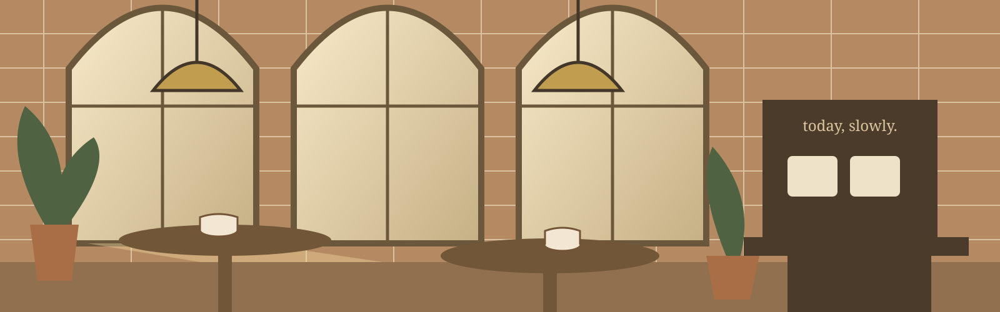

Espresso drinks
Flat white, cortado, oat latte

YOUR DAILYSPECIALTY COFFEE · DALSTON, LONDON
Single-origin espresso, seasonal filter,
and everything baked from scratch.
FRESH FROM THE COUNTER
Good ingredients. Nothing complicated.
Made for your kind of morning.
KNOW YOUR COFFEE
“Every bag tells the story of the farmer who grew it.”
Direct trade relationships, a single-origin focus and three seasonal origins on rotation. Roasted a little closer to home, right here in East London.
Choose an origin to meet your next morning ritual.
Plan a bag of beans ↗YOUR USUAL, OR SOMETHING NEW
Build a takeaway estimate. This browser-only planner does not place an order, charge money or check stock.
Ask us about allergens before ordering. Prices are illustrative; confirm at the café.
A NEIGHBOURHOOD ORIGINAL
In 2019, Jamie Walsh swapped spreadsheets for espresso. The plan was simple: open the café he always wanted to walk into.
A place to read a little, talk a lot, and know the person making your coffee. The machine’s changed. The idea hasn’t.
EST. 2019 · SPECIALTY COFFEE · COMMUNITY FIRSTA LITTLE SPACE, A LOT OF POSSIBILITY
Evening private hire, weekend team breakfasts and coffee cuppings.
“Best flat white in Dalston, no competition. The banana bread is dangerous.”@COFFEELOVER · SAMPLE GUEST REVIEW
“A proper neighbourhood café. We came for brunch and stayed all morning.”HANNAH · SAMPLE GUEST REVIEW
“My little daily ritual. Always something lovely on filter.”ALEX · SAMPLE GUEST REVIEW
THERE’S A SEAT FOR YOU
Monday–Friday 7am–5pm · Saturday–Sunday 8am–5pm
14 Kingsland Road, Dalston, London E8